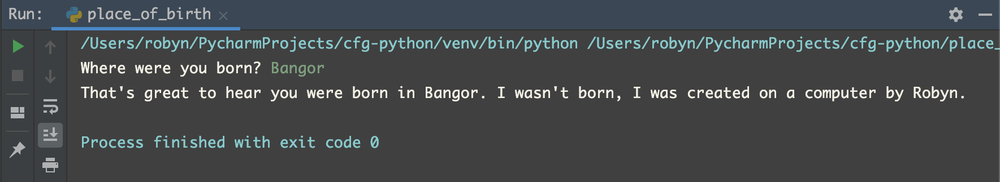

Topics covered this week:
A program might require information from the user or a database in order to run. Python contains a built-in function that we can use to get the required information from a user. This function is:
input()
When this function is run, Python will pause program execution until the user replies with the keyboard. You can add a prompt as an argument (an argument is what you put in the brackets that follow the function name—see 5. Functions). This could be a question. For example, you could ask the user where they were born like this:
input("Where were you born? ")
The user would then be required to type a reply into the console before the rest of the program runs. In the following example, the first line would run, the user would then type in a reply into the console and then the second line would run:
place_of_birth = input("Where were you born? ")
print("That's great to hear you were born in " + place_of_birth + ". I wasn't born, I was created on a computer by Robyn.")
In the Run window, this is what would happen (in green is what the user typed):

Whatever the user types in response to the input() function will be a string, even if they type a number in. If you want an integer to be returned, this must be specified in the code by using the int() function:
friends = int(input('How many friends are over at your house? '))
pizzas = friends * 0.5 + 0.5
print("In order to feed you and your {} friends, you need to buy {} pizzas.".format(friends, pizzas))
Modules are Python files containing a set of prewritten functions—they are basically scripts. It could be some code that someone else has written and you want to reuse in your new program. Or maybe you have written a complicated function that you want to use in several programs but don't want to copy and paste it into each one. Modules must first be imported into your program before you can call the functions they contain. To do this, type the word "import" followed by the module name (the module must be in the same directory).
import turtle
Once you have imported a module, you can use its functions. In our course, this was demonstrated using using the Turtle module, which is an old program that draws basic shapes and was originally created to teach children some coding. It's not important to learn the Turtle function names, what they do or anything like that. This is just one module that is used here to demonstrate how a module works.
In the session we used Turtle to draw some basic squares and triangles. We learnt how to colour them in, alter their size etc. The following is an example of the code used to draw a triangle and colour it in:
import turtle
side_length = 200
angle = 120
turtle.color("blue", "pink")
turtle.begin_fill()
turtle.forward(side_length)
turtle.right(angle)
turtle.forward(side_length)
turtle.right(angle)
turtle.forward(side_length)
turtle.right(angle)
turtle.end_fill()
turtle.done()
In the code used above, you can see that the following block of code is repeated three times, once for each side of the triangle:
turtle.forward(side_length)
turtle.right(angle)
This is a bit verbose. A more terse way of writing this would be to use for loops, which are covered in the following section.
For loops allow you to repeat the same block of code a number of times. They look like this:
for variable_name in range():
body
They begin with a for operator, followed by a variable name chosen by the user, followed by an in operator and a set of values. On the following line goes the body, which must be indented by 4 spaces. The body could contain any function you want repeating.
The set of values can take the range() function. This tells the loop how many times to repeat. It starts counting from 0 (rather than 1). The following code instructs Python to print out a list of 5 numbers. As it starts counting from 0, the five numbers are 0, 1, 2, 3, and 4.
for number in range(5):
print(number)
0
1
2
3
4
As previously mentioned, the for loop can be used in the Turtle module to make the code more terse:
import turtle
length = 200
angle = 90
turtle.color("darkcyan", "lightcoral")
turtle.begin_fill()
for side in range(4):
turtle.forward(length)
turtle.left(angle)
turtle.end_fill()
turtle.done()
We can combine the for loop with the input() function we learnt earlier to ask the user about the type of shape they want to draw:
import turtle
no_sides = int(input("How many sides do you want your shape to have? "))
length = int(input("How big do you want your shape to be? Specify the
length of one side in number of pixels: "))
angle = 360 / no_sides
turtle.color("darkcyan", "lightcoral")
turtle.begin_fill()
for side in range(no_sides):
turtle.forward(length)
turtle.left(angle)
turtle.end_fill()
turtle.done()
Now that we have created a shape, we might want to create it again later on in our program. We could just copy and paste the code again. However, this would be a lengthy way of doing things. A better way would be to define the whole block of code for a certain shape as a function.
Functions are reuseable blocks of code. We have seen that modules contain functions that we can use. But we can also define our own.
def function_name (arguments):
body
To create a function we use the def operator. This is follwed by a user-defined function name. This is what you will use to call the function later (e.g. my_new_function()). The arguments are what you pass to the function. In the Turtle module, for example, you could have the side length as an argument. As with for loops the following line must be indented by exactly 4 spaces. The body contains the code that you want the function to carry out.
We can once again use the Turtle module to demonstrate. Earlier, we wrote out the code required to draw a square. But if we know we might want to draw several squares in our program, we could assign all of the code used to create a square to the function square().
def square(side_length):
angle = 90
for side in range(4):
turtle.forward(side_length)
turtle.left(angle)
turtle.done()
We can make it a little more interesting and add colour arguments to the square() function in addition to side length.
import turtle
def square(side_length, line_colour, fill_colour):
angle = 90
turtle.color(line_colour, fill_colour)
turtle.begin_fill()
for side in range(4):
turtle.forward(side_length)
turtle.left(angle)
turtle.end_fill()
turtle.done()
square(100, "darkcyan", "palevioletred")
return operator
The return operator enables values to be returned from a function. You could use it to create functions that calculate sums:
def add(num_1, num_2):
return num_1 + num_2
total_height = add(182, 160)
print(total_height)
342
The calculations can be more complicated than simple addition. The following example was an exercise we were asked to complete as part of the course. It is a function designed to calculate the area of a circle:
def circle_area(radius):
area = 3.14 * (radius ** 2)
return(area)
circle_1 = circle_area(9)
print(circle_1)